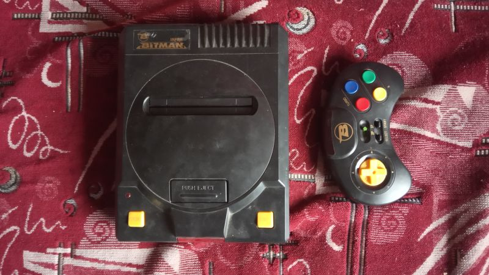

| Произведён | После 1994 года |
| Процессор | ???(безкорпусный аналог MOS-6502) |
| Зеленит | Нет |
| Встроенные игры | Нет |
| Количество слотов для картриджей | 1 |
| Стандарт картриджа | Японский Famicom 60 пинов |
| Звуковой процессор | Удешевлённый |
| Количество пинов геймпадов | 15 |
| АВ-выход | Работает |
| Антенный выход | Работает |
Bitman Infra
Bitman Infra - клон Nintendo Famicom, изначально созданный Тайваньской фирмой Ke-Chyl для внутреннего рынка приблизительно в 1988 году. В 1993-4 годах был привезён в Россию фирмой Битман под собственным названием Bitman Infra и продавался вплоть до самого закрытия компании Bitman. В нашем музее представлен клон с номером 9457.
Комплектация:
Туша консоли
Один беспрводной геймпад
Основная информация:
Сама по себе консоль является лишь адаптацией приставки-фамиклона Ke-Chyl, созданной изначально на Тайване. Приставка была одним из наиболее продвинутых клонов Famicom, за счёт того что использовала беспроводные инфракрасные контроллеры.
Если судить по некоторым источникам, то предположительно за основу этого клона была взята другая приставка - Micro Genius IQ-1000, это подтверждается тем, что у консолей действительно есть общие детали и общий концепт корпуса клонов и правда похож, однако отличия имеются во внутренней плате и некоторых конструктивных особенностях приставки, например рычаг для выбрасывания картриджа в IQ-1000 используется на нижней части корпуса, а на этом клоне он является монолитной деталью на верхней части. Поэтому точно нельзя утверждать о том, что имело место быть полное копирование, вполне допускаю что имело место лишь заимствование некоторых узлов, а дальше уже самостоятельная доработка и изменение некоторых из них.
Также отличия есть и в том, что у Джениуса 1000 плата не монолитная, а разделена на две отдельные, в то время как у Битмана - плата одна единственная. Но самое главное отличие в том что, Микро Джениус имеет другое расположение деталей на плате, и чаще всего был собран на микросхемах, в то время как данный клон использует БМК, в частности процессор, который очень схож с клоном Денди Джуниор.
Несмотря на то, что имеет беспроводные геймпады, в консоли есть возможность подключить и обычные проводные - в корпусе оставлены слоты 15-ти штырьковые для присоединения обычного геймпада от Денди Классик например. Это сделано предусмотрительно на случай если бесповодные не будут работать или потеряются, что является неплохим ходом.
Беспроводные геймпады сделаны явно под впечатлением от геймпадов от Mega Drive, как минимум 8-ми позиционная крестовина и полукруглая форма слишком хорошо напоминают нам про оригинал. Нужно отметить что геймпад прекрасно работает без провода, но вот расстояние на котором он работает к сожалению достаточно мизерное, но по факту они работают и это хорошо.
Сама приставка поскольку собрана на БМК - имеет плохое качество одного из каналов звука и не имеет выкрученного зелёного цвета на некоторых играх, а также не затемняет игры как Книга Джунглей, Скалолаз или Иммортал. Однако сам экземпляр полностью исправно работает
К сожалению на данный момент в нашем распоряжении лишь сама консоль и один геймпад, посему дать больше информации по этому клону на данный момент не представляется возможным